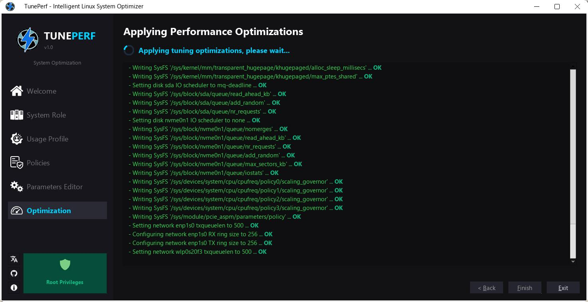
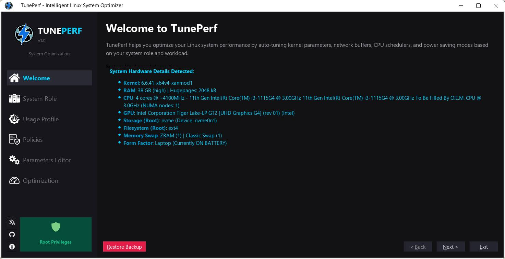
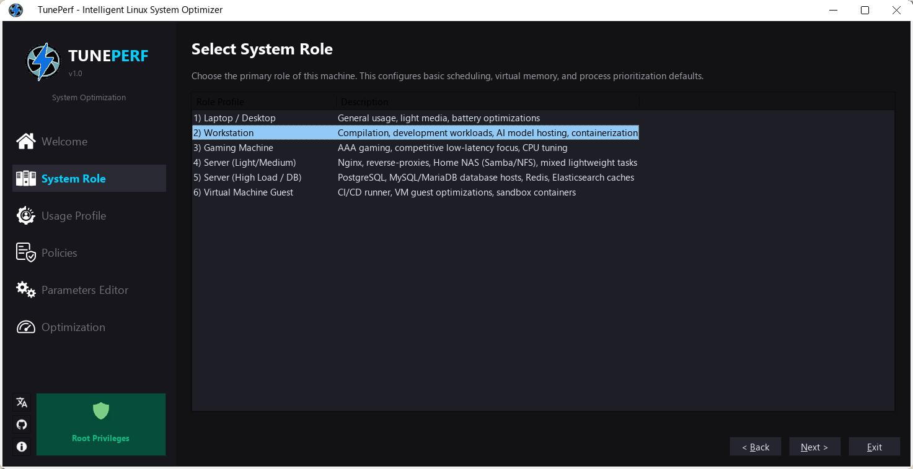
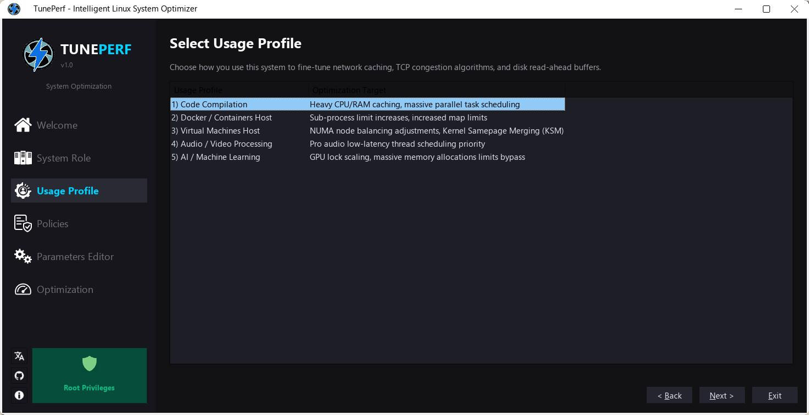
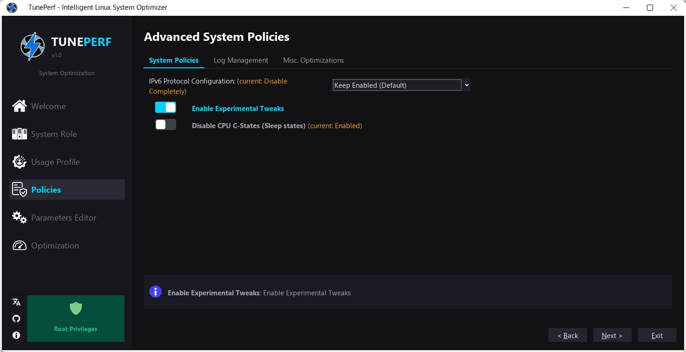
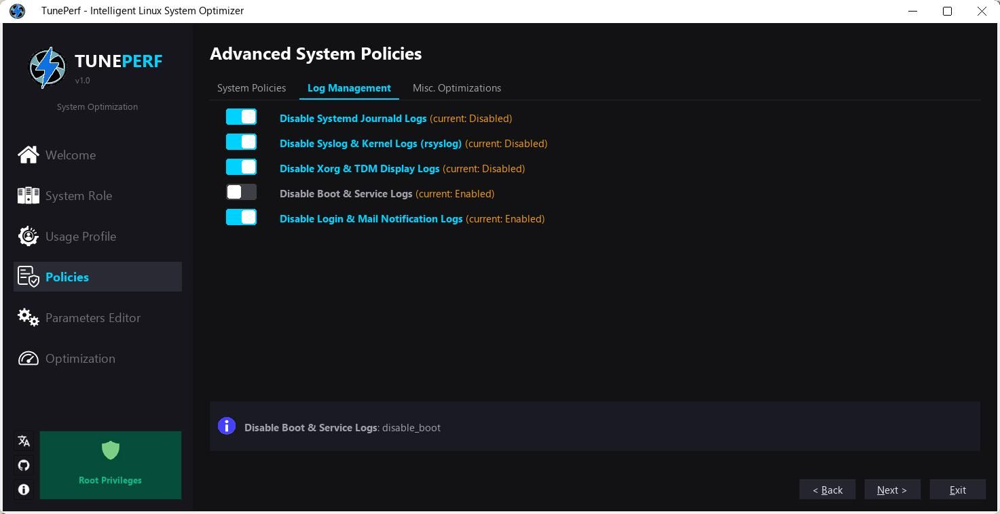
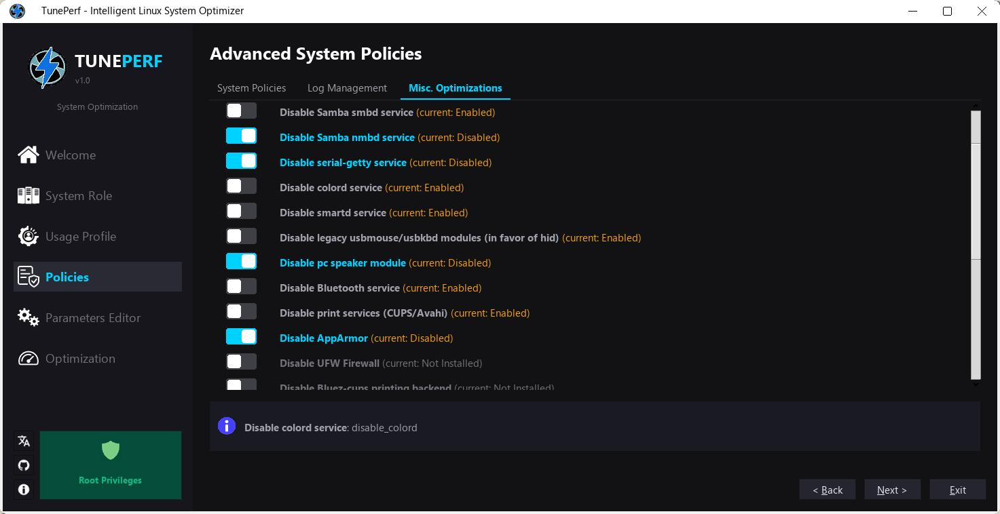
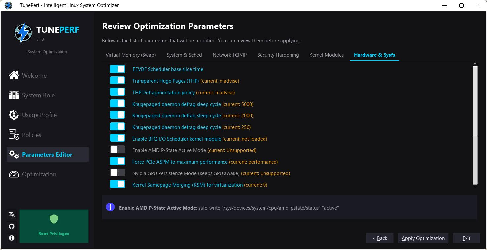

Intelligent Linux System Optimizer GUI
Install via the official APT repository for automatic seamless updates on Debian/Ubuntu/Trinity based systems.
Download the package format that best suits your distribution.
Debian/Ubuntu native installers. Available in dynamic (system Qt) or static standalone build.
Download Dynamic .deb Download Static .debGraphical one-click installer designed specifically for Q4OS Trinity desktop. Automatically configures APT.
Download .qsiSelf-contained portable executable with bundled dependencies (runs on any distro).
Download AppImageCompressed binaries for portable execution without installation.
Download Dynamic .tar.gz Download Static .tar.gz






